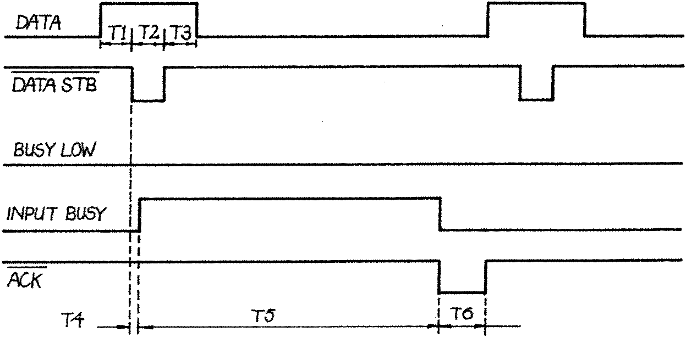

80-Bus News |
July–October 1982 · Volume 1 · Issue 3 |
| Page 36 of 51 |
|---|
That should explain itself, there is nothing complicated about it, it uses the Nascom output routines to do the hard work. Note that SRLX is called from within the handshake program, this means that it is not necessary to set the X command on, although the last parameter given to the X command will be the default protocol for the output. If the X command is to be used, simply omit the RCAL SRLX, and the routine will work as a handshake routine only.
Driving a printer fitted with a Centronics input is a little more complicated. As has already been mentioned, the Centronics output is parallel so use is made of the Nascom or Gemini onboard PIO device. The PIO device ought to be the subject of an article in it’s own right. Howard Birkett covered it way way back in INMC 1 or 2, and I had a go at describing it in INMC 3. Although these magazines are long since out of print, Howard’s article is reprinted in the ‘Best of INMC’ which is still available. I will not dwell on the PIO device itself, simply list the actions needed to prime the device to make it work as Centonics type interface.
Before starting to write an interface program it is necessary to understand what it is it is intended to drive. The Centronics interface works like this.
| 1 | seven bits of data are placed on the output |
| 2 | A slight delay to allow the data to settle |
| 3 | A strobe pulse is generated to cause the printer to latch in the data |
| 4 | A slight delay to allow the data to be latched |
| 5 | The strobe pulse is removed |
| 6 | The printer generates an ACKnowledge pulse |
| 7 | The printer also generates a BUSY signal which remains active until any print action is complete. |

FIG.2
|
| Page 36 of 51 |
|---|